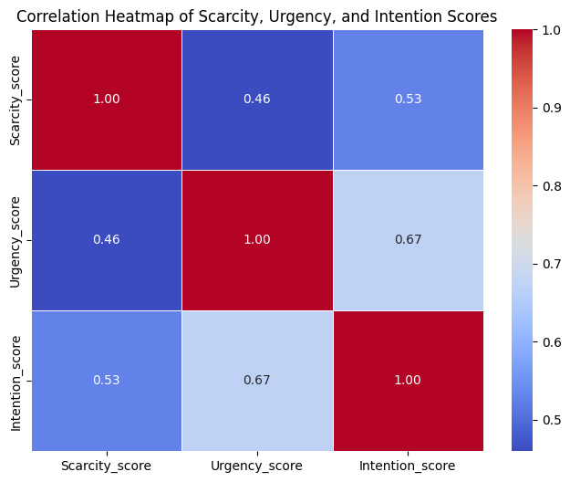
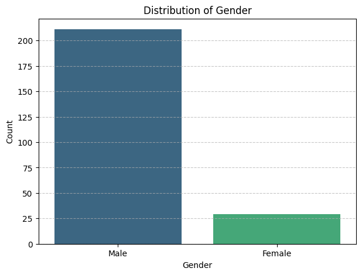
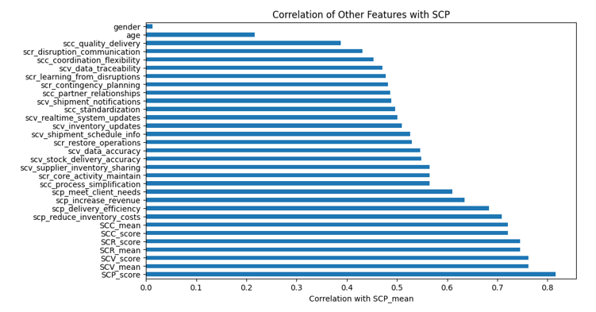
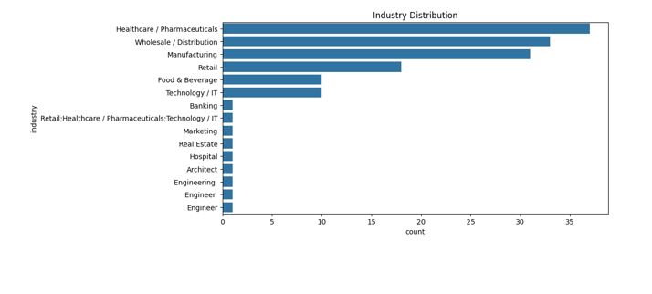
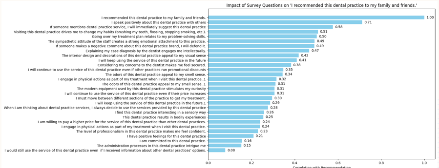
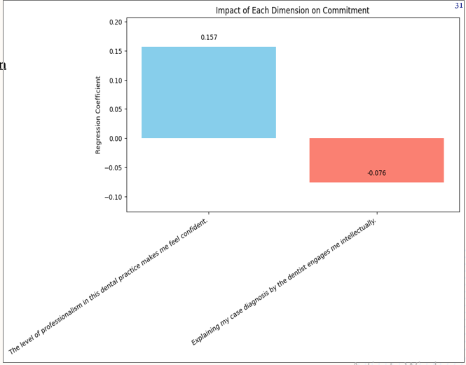
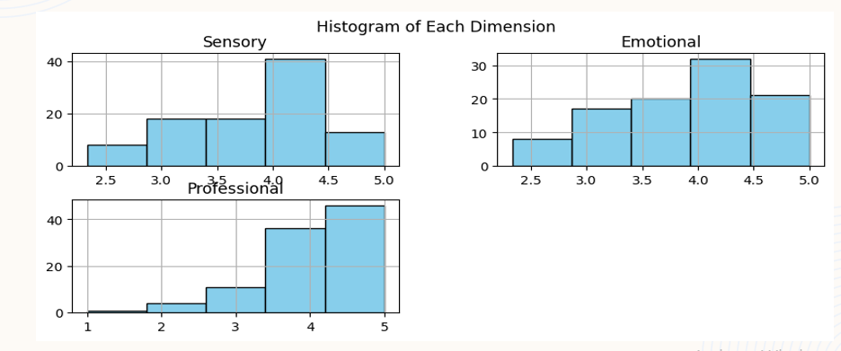
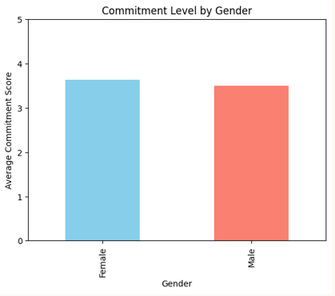
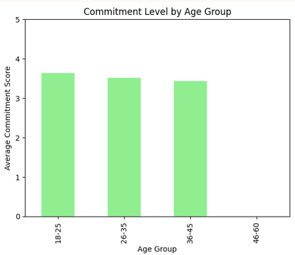

Skills

Python

SQL

Power BI

Statistics
Pandas
NumPy

Excel (Pivot, Power Query)

Data Modeling

Data Quality & Validation

Performance Optimization
I am a motivated Data Analyst skilled in Python, SQL, Excel, and Power BI, with experience in cleaning data, visualizing insights, and building dashboards that support smart business decisions.
I am a dedicated Data Analyst with experience working on multiple projects across different fields and collaborating with diverse teams.
I have strong skills in cleaning data, analyzing trends, and building clear visual dashboards I continuously develop myself through courses and hands-on projects, and I enjoy turning complex data into meaningful insights that support better decisions.
Python
SQL
Power BI
Statistics
Pandas
NumPy
Excel (Pivot, Power Query)
Data Modeling
Data Quality & Validation
Performance Optimization
Tools: Power BI ,Power Query
Interactive Power BI dashboard analyzing sales performance and business.
Tools: Power BI ,Power Query
This dashboard provides insights into customer churn behavior using telecom dataset features such as total day calls, customer service calls, account length, international plan, and voicemail messages.
It helps in identifying patterns and trends that may influence customer churn.
Tools: Python
Analyzed a real estate consumer behavior dataset to understand how scarcity and urgency marketing cues influence purchase intention.
Tools: Python
This project analyzes a structured survey collected from participants across different industries, assessing key operational dimensions within the supply chain.
Tools: Python, Power BI, Excel, Power Query
This project analyzes patient satisfaction data collected from a dental clinic survey.
The goal is to clean the dataset, evaluate reliability, explore correlations, run regression analysis, create Power BI visuals, and generate key insights about factors influencing patient commitment and recommendation behavior.
Tools: Power BI, DAX, Power Query
End-to-end sales analysis project evaluating restaurant performance, customer behavior, branch performance, and revenue trends through an interactive Power BI dashboard.
Analyzed a real estate consumer behavior dataset to understand how scarcity and urgency marketing cues influence purchase intention.

The correlation matrix illustrates the strength and direction of the relationships between the three main constructs in the survey: Scarcity, Urgency, and Purchase Intention.
The analysis shows positive correlations across all constructs, meaning that as perceptions of scarcity and urgency increase, purchase intention also tends to increase.
The strongest correlation is observed between Urgency and Purchase Intention, indicating that time-sensitive marketing messages (such as deadlines or limited-time offers) have a strong influence on consumers willingness to buy.
.png)
The chart helps compare how respondents reacted to individual items within the Scarcity, Urgency, and Purchase Intention constructs.
Most questions show a higher concentration of responses in the “Agree” and “Strongly Agree” categories, indicating generally positive perceptions toward the statements presented.
This visualization displays the distribution of responses for each survey question across the five-point Likert scale (from Strongly Disagree to Strongly Agree).
Each bar represents one question, segmented by the proportion of participants selecting each response level.
.png)
The bar chart presents the Cronbachs Alpha values for the three main constructs in the survey: Scarcity, Urgency, and Purchase Intention.
Cronbachs Alpha measures the internal consistency of items within each scale, indicating how reliably the questions capture the intended psychological construct.
The visualization includes a reference line at 0.70, making it easy to see that all constructs meet or exceed the minimum reliability standard.

This bar chart displays the distribution of gender among the survey respondents.
It shows the number of male and female participants, allowing for a quick understanding of the demographic balance in the dataset.
This imbalance is typical in survey-based datasets and does not significantly affect the overall analysis, especially since later statistical tests (t-tests) showed no significant difference between males and females in their purchase intention responses.
This project analyzes a structured survey collected from participants across different industries, assessing key operational dimensions within the supply chain
.png)
The correlation matrix shows the strength and direction of the relationships among the four main supply-chain dimensions: SCC, SCV, SCR, and SCP.
There are strong positive correlations between SCC, SCV, and SCR (r ≈ 0.68 ,0.76), indicating that improvements in internal processes, visibility, and resilience tend to move together.
SCP shows weaker but positive correlations with the other dimensions (r ≈ 0.33,0.37), suggesting that performance outcomes are influenced by operational factors, but less directly.
The matrix highlights how the operational dimensions reinforce one another and how each contributes—at different strengths—to overall supply-chain performance.

The chart shows how strongly each feature in the dataset is correlated with SCP (Supply Chain Performance). Each bar represents a variable, and the length of the bar indicates how much that variable is associated with overall performance.
Visibility (SCV) and Resilience (SCR) features show the strongest positive correlations with SCP, followed by Capabilities (SCC). Demographics like gender and age have almost no impact.
the chart highlights which operational factors have the strongest relationship with performance, helping identify the areas that should be prioritized for improvement.

Visualized participant distribution across industries to ensure dataset diversity.
Highest representation came from Healthcare/Pharmaceuticals, Wholesale/Distribution, and Manufacturing.
Ensures that supply-chain insights reflect a broad mix of sectors rather than a single-industry bias.
This project analyzes patient satisfaction data collected from a dental clinic survey.
The goal is to clean the dataset, evaluate reliability, explore correlations, run regression analysis, create Power BI visuals, and generate key insights about factors influencing patient commitment and recommendation behavior.
.png)
A Power BI dashboard was created to visually present:
Overall patient satisfaction levels
Visual breakdown of Sensory, Emotional, and Professional dimensions.
Key KPIs and interactive charts to help understand patient experience trends.

Questions with higher correlation values show a stronger relationship with patient commitment, indicating which aspects of the service experience matter most to patients.
This visualization helps identify the key drivers of commitment, enabling the clinic to focus on the specific areas that contribute the most to patient loyalty and overall satisfaction.

The visualization illustrates the impact of each survey dimension—Sensory, Emotional, and Professional—on the commitment outcome.
The bar chart displays the regression coefficients, showing how strongly each dimension contributes to predicting the commitment score.
The Sensory and Emotional dimensions demonstrate positive coefficients, indicating that improvements in these areas lead to higher patient commitment.
In contrast, the Professional dimension shows a negligible effect, suggesting that it has minimal influence on the commitment variable.
This visualization helps highlight which dimensions play the biggest role in shaping patient loyalty and where improvement efforts should be focused.

The histograms display the distribution of responses for each survey dimension—Sensory, Emotional, and Professional.
These visualizations help identify how patient ratings are spread across the scale and reveal patterns such as skewness, concentration of responses, or variability within each dimension.
By examining the shape of each histogram, it becomes clear whether patients tend to give consistently high, moderate, or low scores.
In contrast, the Professional dimension shows a negligible effect, suggesting that it has minimal influence on the commitment variable.
This provides valuable insight into how patients perceive each aspect of their experience and highlights which dimensions show stronger or weaker satisfaction levels.

The visualization compares the commitment levels between male and female patients.
Female patients show a slightly higher average commitment score (3.63) compared to male patients (3.50).
This indicates that female patients demonstrate a marginally stronger sense of loyalty toward the dental clinic.
The chart helps highlight gender-based differences in patient engagement, allowing the clinic to understand which group reports higher commitment and tailor improvement strategies accordingly.

The visualization shows how commitment levels vary across different age groups.
Patients aged 18-25 reported the highest average commitment score (3.63), followed by those aged 26-35 (3.52).
Commitment levels decline slightly in the 36-45 group (3.43), while no valid responses were available for the 46-60 age range.
This pattern indicates that younger patients tend to show slightly stronger commitment to the dental clinic.
The chart helps identify which age segments are more engaged and where additional focus may be needed to improve commitment among older groups.
Want to collaborate or have a question? Let's talk! 😊
Email Me